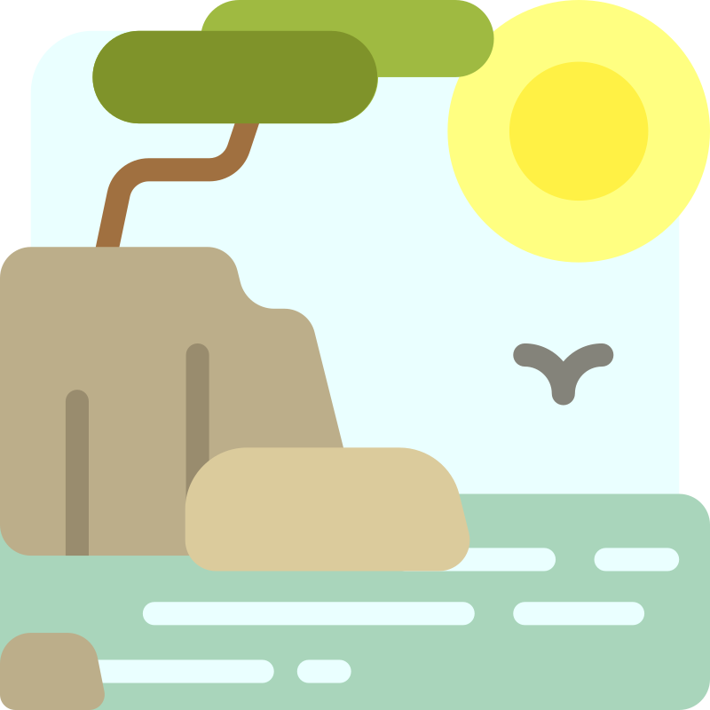

Agulo
Between terraced fields and cliffs, Agulo is a place to wander through narrow streets and look out to sea.
Agulo, La Gomera
Among banana groves, with views of the Atlantic.
Explore the houseAgulo from above

The house
The house sits among banana groves and fruit trees in northern La Gomera. Inside its stone walls are three bedrooms, a kitchen and a reading nook. The sun terrace looks out over the Atlantic.
Take a look around
Sea viewsGallery
Select a photo to enlarge it.
The area
Between terraced fields and cliffs, Agulo is a place to wander through narrow streets and look out to sea.

A glass walkway extends over the cliffs, with views of Agulo and the north coast.